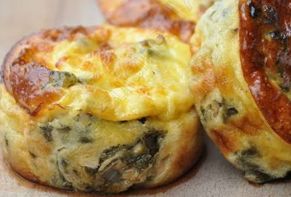

Moelleux saumon épinards
Ingrédients
16×
- 4 oeufs
- 200 g de farine
- 1 sachet de levure chimique
- 15 cl de lait
- 10 cl d'huile d'olive
- sel
- poivre
- 200 g d'épinards cuits
- 200 g de saumon frais cuit

Pour 16 muffins.
Préparation
Étape 1
Fouetter 4 oeufs, puis ajouter 200 g de farine, 1 sachet de levure chimique, 15 cl de lait et 10 cl d'huile d'olive. Ajouter du sel et du poivre.
Étape 2
Ajouter 200 g d'épinards cuits et éventuellement 200 g de saumon frais cuit émietté.
Étape 3
Remplir les moules et cuire 25min à 180ºC.
Résumé
4 oeufs
200 g de farine
1 sachet de levure chimique
15 cl de lait
10 cl d'huile d'olive
sel
poivre
Fouetter
200 g d'épinards cuits
200 g de saumon frais cuit
cuire 180ºC